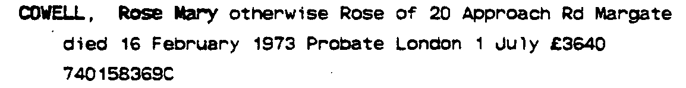
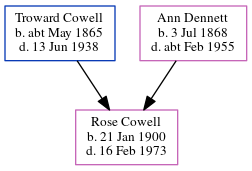

Rose Mary Cowell 1900 - 1973
[ Home ] | [ Calendar ] | [ Surnames Index ] | [ Errors ] | [ Family History ]A domestic and the child of Troward Cowell (a horseman) and Ann Dennett, Rose Cowell, the first cousin twice-removed on the mother's side of Nigel Horne, was born in Margate, Kent, England on 21 Jan 19001,2,3,4,5 and baptised there at St John the Baptist Church on 4 Mar 1900.
During her life, she was living at Gore End Farm, Birchington, Kent, England on 31 Mar 19019 and on 2 Apr 191110; at Granville House, Acol, Kent on 19 Jun 192111; and at 20 Approach Road in Margate on 16 Feb 19738. In 1921 she was working at Henry Woolley Private in Beadon Lodge, Margate.
She died on 16 Feb 1973 in Thanet, Kent, England3,4,6,7.
Parents
- Troward was born c. May 1865
- Ann was born on 3 Jul 1868
Citations
- 1901 England Census Online publication - Provo, UT, USA: The Generations Network, Inc., 2005.Original data - Census Returns of England and Wales, 1901. Kew, Surrey, England: The National Archives of the UK (TNA): Public Record Office (PRO), 1901. Data imaged from the National
- 1911 England Census Online publication - Provo, UT, USA: Ancestry.com Operations, Inc., 2011.Original data - Census Returns of England and Wales, 1911. Kew, Surrey, England: The National Archives of the UK (TNA), 1911. Data imaged from the National Archives, London, England.
- England & Wales deaths 1837-2007 - Findmypast
- England & Wales, Death Index: 1984-2005 Online publication - Provo, UT, USA: The Generations Network, Inc., 2007.Original data - General Register Office. England and Wales Civil Registration Indexes. London, England: General Register Office. © Crown copyright. Published by permission of the Cont
- England & Wales, FreeBMD Birth Index, 1837-1915 Online publication - Provo, UT, USA: The Generations Network, Inc., 2006.Original data - General Register Office. England and Wales Civil Registration Indexes. London, England: General Register Office. © Crown copyright. Published by permission of the Cont
- England & Wales Government Probate Death Index 1858-2019 - Findmypast
- UK Probate Records
- UK Probate Records
- 1901 England, Wales & Scotland Census - Findmypast (was age 1 and the daughter of the head of the household)
- 1911 Census for England & Wales - Findmypast (was age 11 and the daughter of the head of the household as age 11 and the daughter of the head of the household)
- 1921 Census Of England & Wales - Findmypast (was age 21 and the daughter of the head of the household)
Media
Rose Mary Cowell - Probate

England & Wales births 1837-2006 - BMD/B/1900/1/AZ/000136/300
England & Wales deaths 1837-2007 - BMD/D/1973/1/AZ/000289/010
Canterbury Baptisms Transcription - GBPRS-CANT-B-96229365
1911 England, Wales & Scotland Census Transcription - GBC-1911-RG14-04479-0323-5
England, Births & Baptisms 1538-1975 Transcription - R_884651591
England, Births & Baptisms 1538-1975 Transcription - R_885883517
1901 England, Wales & Scotland Census Transcription - GBC-1901-0005518440
Canterbury Baptisms - GBPRS/CANT/B/96280407
England & Wales Government Probate Death Index 1858-2019 - GBOR/GOVPROBATE/C/1974-1974/00052517
1921 Census of England & Wales - GBC/1921/RG15/04433/0277/05
Family Tree
Map
Generated by ged2site. Last updated on Jul 3, 2024
Known Issues
1939 UK register information missing